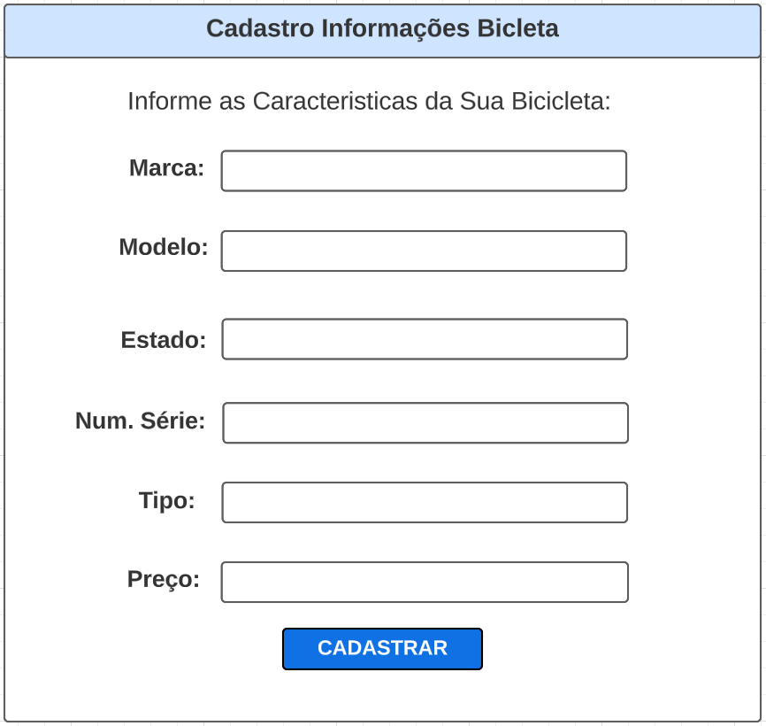

Cadastro Bicicleta
Nesta seção da aplicação, o usuario irá realizar o seu cadastro. Informando do seu Nome Completo, CPF e Email (assim como uma senha).
Depois de realizar o seu cadastro, se todas as informações forem validas (Nome conter apenas letras, CPF ter sido escrito corretamente, e Email conter @ e .com) o usuario será redirecionado para a seção onde ele deverá registras as informações de sua bibicleta.
